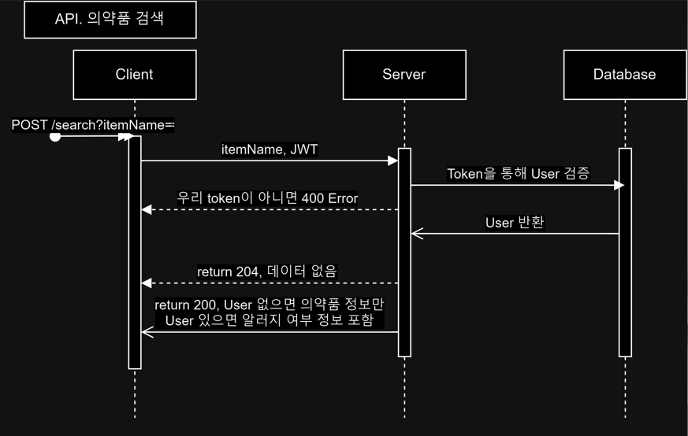

Dowajoyak
본인의 알러지 입력을 기반으로 한 약 검색서비스, 도와조약입니다.

dowajoyak GitHub
🔗 URLs
Team github: https://github.com/codestates-seb/seb43_main_009
Refactoring github(BE code): https://github.com/Sniij/refactoring_dowajoyak
Deployment : https://www.dowajoyak.store
🛒 Skills
- Back-end : Java, Spring Boot, Spring Data JPA, Spring Security, Spring MVC
- Database : MySQL, AWS RDS
- Deployment : AWS (EC2, ELB, S3, CloudFront, Route 53, CodeDeploy), GitHub Action
📄 Docs
- 도와조약 서비스 메뉴얼
- 도와조약 사용자 요구사항 정의서
- 도와조약 API 명세서
📚 Summary
간단한 프로젝트 소개를 드리면 해당 프로젝트는 의약품을 검색 했을 때 유저가 설문조사를 통하여 미리 저장해둔 알레르기나 기저질환에 따라 생길 수 있는 부작용들을 안내해줍니다.
오늘날 현대인들이 직접 정보를 찾아가면서 영양분을 챙기기 어려운 부족한 영상소를 간단한 설문조사를 통해 영양제를 맞춤 추천해줍니다.
또한 같은 증상을 가진 분들의 정보를 공유하거나, 의학 정보, 약품에 대한 정보와 의견들을 커뮤니티를 통해 의견을 나눌 수 있습니다.
아래는 프로젝트 중 본인이 맡은 부분만 정리해 보았습니다.
- Git Branch strategy design:
아래와 같이 크게 FE-BE 통합을 위한 dev 브랜치와 배포를 위한 main 브랜치를 큰 틀로 두고 나누었습니다.
- Github convention configuration:
팀원들의 커밋 내용을 서로가 알아보기 쉽게 구성했습니다.
- Spring Security configuration (For login, signup)
- CORS configuration(security+S3)
- OAuth2 + JWT 통합구현:
아래와 같은 흐름으로 구현하였습니다.
- Client와 통신을 위한 기본 배포 환경 configuration(EC2+RDS+S3)
- 배포 도메인 안정성을 위해 https to https deploy configuration(ACM, CloudFront, ELB, Route 53)
- AWS IAM 유저 생성 후 권한 설정하여 팀원들이 AWS 서비스에 접속할 수 있도록 configuration:
AWS 서비스에 대한 관리 대부분을 제가 담당하여 팀원들이 개별적으로 AWS 서비스를 접속할 수 있도록 권한 설정 등을 한 후 계정을 나누어 관리하였습니다.
- Github Actions configuration (FE+BE, Code Deploy):
FE 와 BE 각 팀별 branch에 PR을 날리면 빌드 스크립트를 이용하여 각각 빌드하게 하여 FE는 S3에 BE는 EC2에 배포되도록 구성하였습니다.
- 서버 환경 변수 리소스를 Parameter Store와 연동 configuration:
Spring Cloud를 이용하여 Parameter Store를 연동시켜 서버 환경 변수들을 외부에 노출시키지 않고 관리하게끔 하였습니다.
- 외부 API 연동 후 커스텀 하여 약 검색 API 구현:
- RestTemplate을 이용하여 공공 데이터 API와 통신을 수행하였고, 필요한 데이터만 받을 수 있도록 JSON parsing service 구현하여 활용하였습니다.
- 사용자 정보를 검색 데이터와 매핑시켜 사용자에 따라 보여지는 검색 데이터 가공하였습니다.
- 아래와 같은 흐름을 갖고 구현하였습니다.

- 커뮤니티 게시판 API 구현:
아래와 같은 흐름을 갖고 구현하였습니다. 사용자에 대한 검증은 JWT를 통해하였습니다.
- 유저 관련 API 구현:
아래와 같은 흐름을 갖고 구현하였습니다.
- S3 버킷에 이미지를 올리는 API 구현:
Spring Cloud의 S3 client를 이용하였고, 아래와 같은 흐름을 갖고 구현하였습니다.
- Refresh token을 통한 access token 재발급 API 구현:
FE 쪽에서 Token 검사를 지속적으로 하고, Access Token이 없다면 Refresh token을 보내 Access Token을 재발급 할 수 있도록 하였습니다. 아래와 같은 흐름을 갖고 구현하였습니다.
📑 Meaning
Front-end와 Back-end 각각 팀으로 구성하여 제가 전체 팀장으로 진행한 프로젝트입니다.
아무래도 처음 만나는 사람들끼리 팀을 이루어졌고, 모든 팀원이 사실상 처음으로 프로젝트를 진행한 것이라 개개인에게 큰의미가 있던 프로젝트였습니다. 프로젝트 개요부터 마무리까지 개개인의 의견차이가 있어 개발자들에게 소프트스킬이 많이 중요한 것도 깨닫게 되었습니다.
또한, 이 프로젝트는 외부 API를 연동하여 사용하기로 하였는데 이에 대한 경험이 전무하였고,
Spring에서 직렬화와 역직렬화를 다루는 개념도 미흡하고, Https to https 배포 또한 경험이 없었기에 많은 부분에서 이슈가 생길 것으로 예상됐었습니다.
그래도 결과적으로 프로젝트를 통해서 걱정했던 이슈를 모두 해결하며 만족할 만한 결과물을 얻을 수 있었어서 자신을 한 단계 성장시킨 프로젝트라고 생각합니다.
이러한 프로젝트 경험은 저의 개발자 가치관을 재정의 할 수 있었고, 웹 개발자라는 직업에 대해 조금 더 알아갈 수 있었던 시간이었습니다. 물론 다양한 지식을 습득하여 구현하는 것은 부담을 가지게 하였지만 이로인해 충분한 성장을 이루었기에 끝까지 함께 해준 팀원들에게도 감사한 프로젝트입니다.
2023-12-05 백엔드 코드를 리팩토링 하여 개인 깃헙에 공유하였습니다.
⚽ Troubleshooting
A. In Deployment :
1. Mixed content block :
배포할 도메인을 https로 먼저 호스팅 시켰는데 서버 address protocol이 http이기 때문에 http 통신 중 서버와 클라이언트간 protocol이 달라 mixed content로 block이 됐기 때문에 서버 protocol도 https로 배포하였습니다.
Mixed content block은 처음 겪는 에러라서 당황했지만 해결 방법을 깨닫고 인터넷 통신 상에서 protocol이 얼마나 중요한지 알게 되었습니다.
2. CORS :
서버 어플리케이션을 EC2 인스턴스에 실행시켜 놓기 때문에 spring security에서 접속할 수 있는 origin들을 allowed, AWS에서 S3 버킷 쟁책과 CORS도 설정 해줬지만 배포링크에서 아직 CORS 오류가 해결되지 않았습니다. 수많은 검색끝에 해법은 StackOverflow에서 S3 웹사이트 호스팅을 CloudFront를 통해 배포할 때 CloudFront에 대한 정책도 추가해야 된다는 해결의 실마리를 찾았고 결국 버킷 정책에 CloudFront에 대한 정책을 추가하여 해결하였습니다.
이를 통해 AWS 서비스를 빌려 사용할 때 신경써야 하는 범주에 대해 한 번 더 알게 되었고, CloudFront가 단순히 호스팅만 해주는 것이 아님을 알게 되었습니다.
3. AWS RDS 외부접속 block :
배포를 완료하고, RDS를 로컬환경에서 접속하는 시도 중 알 수 없는 이유로 외부접속이 허용되지 않았습니다. 초기 배포 환경이기 때문에 RDS inbound 규칙을 모두 허용한 상태에서 했지만 접속되지 않았습니다. 검색으로는 해결할 방법을 찾지 못하여서 AWS의 공식 문서를 하나씩 읽어가던 중 RDS 외부접속에 실패하였을 때 해볼 수 있는 시도 목록 중 기본적으로 설정되어있는 서브넷이 잘못되어 있을 수 있다는 글귀를 보고 AWS Virtual Private Cloud에서 서브넷을 직접 생성, 라우팅 테이블을 직접 생성하여 만든 서브넷에 연결시켜줬습니다. 이후 다시 로컬에서 접속을 시도하니 해결되었습니다.
이를 통해 컴퓨터 네트워크에서 서브넷과 라우팅 테이블과의 관계와 구조를 파악할 수 있었고, 네트워크의 이해도가 개발자에 있어서 중요하다는 것을 알게 되었습니다.
4. AWS 계정 정지 :
AWS 서비스를 통해 배포를 구성하는 동안 총 2번의 계정 정지를 당했습니다.
먼저 첫번째로 서버 개발 중 AWS access key를 로컬 코드에 삽입하여 AWS 서비스를 로컬에서 접속하였습니다. Access key 같은 중요 환경 변수가 외부로 노출되면 안되는 것을 알기 때문에 github repository에 push할 때 삭제하고 올렸지만, 로그파일에 access key가 담긴 것을 확인하지 못해서 계정을 정지당했습니다. 즉시 AWS와 email을 통해 컨택하며 access key가 노출된 파일을 삭제하고 노출된 key는 삭제했습니다. 이후 AWS 측에 정지해제 컨펌을 요청하여 정지를 풀게 됐습니다.
두번째 정지는 AWS 측에서 따로 사전 공지도 없이 일순간에 정지를 했습니다. 그래서 정지를 당한 즉시 email을 통해 사유를 물어보니 정확한 근거 또는 자료를 제시하지 않고 단순하게 다른 곳에서 제 AWS 계정 접속을 시도한 것 같다라고 답신이 왔습니다. 이 시점이 프로젝트 마감 하루 전이었어서 당장 해결을 위해 시도할 수 있는 방안을 두 가지 생각하여 팀원들에게 현재 상황과 저의 생각을 공유하였습니다. 그렇게 팀원들과 의견 공유를 하게 되었고, 논의끝에 결국 AWS 계정을 새로 만들어서 다시 배포하기로 결정하였습니다. 배포는 팀원 중 저 혼자서 진행하였기 때문에 제가 혼자 다시 처음부터 끝까지 하루만에 배포해야 된다는 부담감이 심했기에 개인적인 시간도 모두 투자했습니다. 그 결과 성공적으로 배포는 마무리할 수 있었습니다. 기존의 계정은 그 시점까지도 AWS 측에서 제대로 처리해주지 않았기 때문에 새로운 배포를 마무리 하고 삭제를 요청했습니다. (AWS는 아직까지도 정확한 근거 또는 자료를 제시해주지 않았음.)
이를 통해 서버 환경 변수 비밀 유지에 대한 중요성을 다시 한 번 느끼게 되었고, 이로 인해 서버 환경 변수 모두를 AWS의 Parameter Store를 사용하여 로컬 자체에서도 환경 변수 모두를 숨겨버렸습니다.
또한 외부 서비스를 빌려 사용할 때는 변수가 많이 발생할 수 있다는 것을 느끼게 되었고, DevOps분들의 노고와 필요성을 충분히 느끼게 됐습니다.
5. AWS EC2 인스턴스 과부하 :
서버로 어느정도의 요청은 EC2 인스턴스가 받쳐주었지만 요청이 일정 수준을 넘으니 멈추는 현상이 지속되었습니다. 인스턴스의 swap area를 사용하게끔 설정했지만 또 어느정도의 수준이 넘어가니 다시 멈추게 됐습니다. 해당 상황을 검색을 통해 찾아보니 AWS의 ELB라는 서비스를 사용하면 서버로의 트래픽이 분산처리 되어 서버에 부담이 덜 갖게 된다는 설명을 듣고 곧바로 제 EC2에 적용시켰습니다. 이후 트래픽을 늘려 테스트를 해보니 인스턴가 멈추는 일은 아직 일어나지 않았고, 모니터링에서 CPU 점유율 또한 급격히 올라가는 일이 잦아졌음을 확인했습니다.
이를 통해 트래픽에 대한 처리의 중요성을 느꼈습니다. 또한 AWS 서비스의 간편함을 느끼게 되었고, 이 때문에 많은 업체가 AWS 서비스를 사용하고 있음을 알게 되었습니다.
B. In Development :
1. gradle에서 Spring Boot와 dependencies 버전 충돌 :
AWS Parameter Store를 사용하기 위해 gradle에 implement 해줬지만 gradle dependency가 사용 중인 Spring Boot 버전과 자동으로 맞춰주지 못했습니다. 찾아보니 현재 사용 중인 Spring Boot 버전이 릴리즈된 지 1주 밖에 안지난 시점이라 그런가 생각했습니다. 그래서 결국 Maven repository에 접속하여 AWS Parameter Store의 최신 dependency를 implementation해주고 gradle dependencies build시 강제로 버전이 낮아지는 dependencies를 모두 직접 찾아서 버전을 명시해주어서 버전 충돌 문제를 해결하였습니다.
해당 문제에 관해서 개발자 선배님에게 여쭤봤는데 이는 개발자들에게 종종 있을 수 있는 문제라 경험해보는 건 나쁘지 않다고 말씀해주셔서 이또한 저에게 문제 해결을 위한 역량을 키워줬다고 생각했습니다.
2. Refresh token 방치 :
해당 프로젝트에선 JWT를 구현하여 사용하였는데 여기서 access token만 사용하다보니 refresh token이 방치됐습니다. 이렇게 된 이유가 뭘까 코드 리뷰를 진행해 본 결과 구조적으로 잘 못 설계된 것을 알 수 있었습니다. 먼저 access token만 사용하기에 access token에 민감할 수 있는 정보가 담겨있고, 만료 시간이 너무 길다는 문제점이 있었습니다. 그래서 access token에는 long 타입의 user ID만 담도록 하고, Access token의 만료시간을 짧게 지정하했습니다. 그래서 접속한 사용자의 유지성을 위해 만료된 access token을 재발급 해주는 api의 필요성이 생겼습니다. 이를 위해 Front-end 팀원 분들과 의논하여 access token의 만료 여부를 검사하여 만료됐다면 refresh token을 헤더에 담아 access token 재발급 api로 요청을 보내기로 설계했습니다. 이후 refresh token을 통해 해당 유저에 대한 access token 재발급 api를 구현하여 테스팅 한 결과 안정적으로 성공하게 됐습니다.
이를 통해 token 관리의 중요성을 알게 되었고, 개발에서 초기 디자인이 개발자의 수고를 매우 덜어줄 수 있음을 경험할 수 있게 됐습니다.
3. 외부 API 연동 후 가져오는 데이터 볼륨 :
외부 API 연동 후 가져오는 JSON 형태의 데이터가 너무 커 요청 자체가 부담이 됐었습니다.
그래서 JSON 데이터를 내가 원하는 데이터로만 가져올 수 있게 parsing하는 클래스를 구현하여 이를 외부 API를 호출하는 클래스에 DI시켜 사용하였습니다. 직렬화와 역직렬화에 대한 개념이 부족했기 때문에 변환시키는 중간마다 직접 로그를 찍어 확인하기도 하면서 고생하였지만 이 과정이 어떻게 이루어 지는 지 확인하여 부족한 개념을 채울 수 있었고, 결과적으로 잘 구현하여 만족감이 높은 성취를 경험했습니다.
👨👨👦👦 Members
A. Front-end :
김성수,
노호준,
염도경,
이진하
B. Back-end :
양인수,
조만기(It's me😁),
한동희